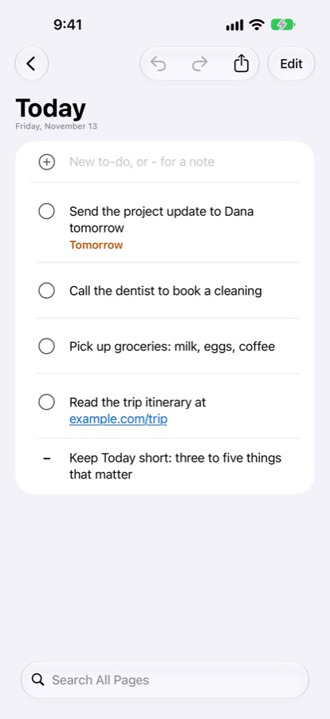
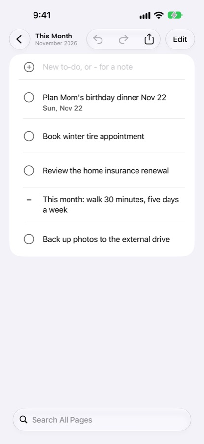
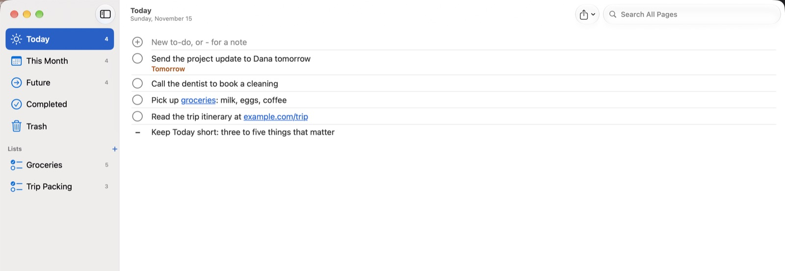
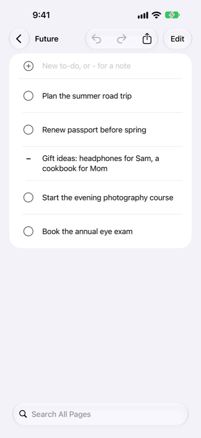
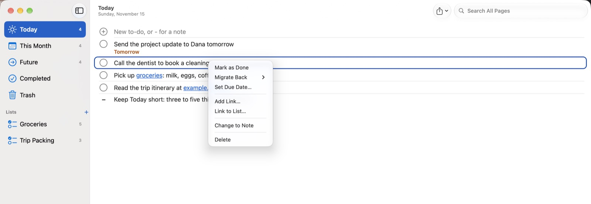
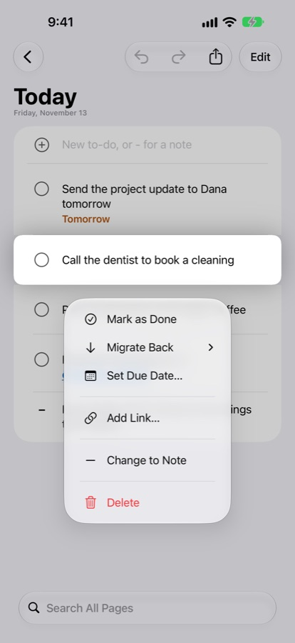
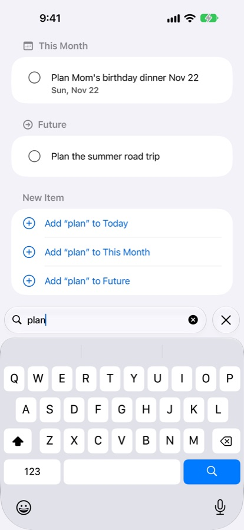
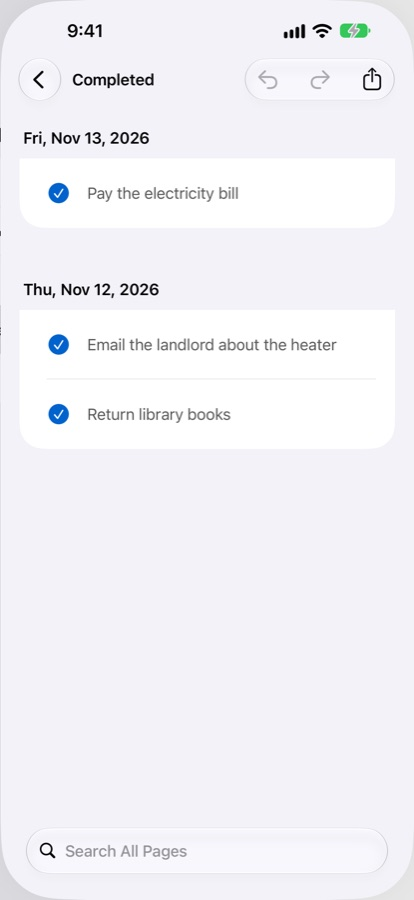
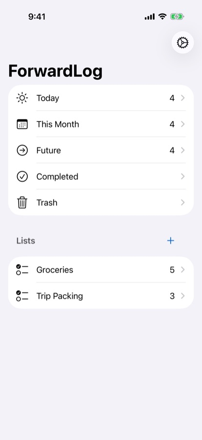
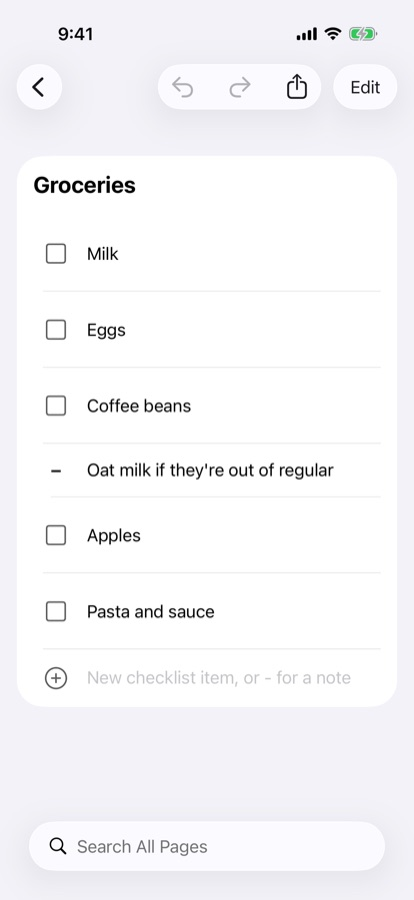

Daily, monthly & future logs for iPhone, iPad and Mac.
Most to-do apps help you collect tasks. ForwardLog helps you decide which ones deserve your attention. It's built around a simple paper-journal habit: write things down quickly, keep a short list for today, a page for this month and a page for later, and every so often move what's left forward on purpose. That moving, called migration, is where the focus comes from. Each time an unfinished to-do comes up again, you decide whether it still matters, and the things that don't simply fall away.
A 30-second tour on iPhone, with narration.The same on the Mac.
1. Four pages, three time frames
Everything in ForwardLog lives on one of four pages in the sidebar. Each page is a time frame, so where an item sits tells you when you mean to deal with it.
Page
What goes there
Today
Your daily log: what you'll actually do today, and quick notes from the day.
This Month
Your monthly log: what you intend to get to this month, but not necessarily today.
Future
Your future log: things for later months, so they stop cluttering today without being forgotten.
Completed
Everything you've finished, grouped by the day you finished it.
There's also Trash, where deleted items wait for 30 days in case you change your mind. Below Trash, under Lists, are lists you make yourself, for things that aren't tied to a day (see Lists for everything else).

Today

This Month

On the Mac and iPad, the sidebar of pages is always visible.
2. Capture quickly
Capturing should take seconds, so you write things down instead of keeping them in your head. Type in the field at the top of any page and press Return. Each line is either:
A to-do, shown with a circle: something to do. Plain text becomes a to-do; you can also start with *.
A note, shown with a dash: something to remember, not to do. Start the line with -.
Keep entries short: a few words you'll understand later. Return in an item starts a new one below it, so you can log several in a row. Pasting a list (for example from Notes or an email) adds one item per line, and checkboxes like - [ ] and - [x] are understood.
Tick a to-do's circle when it's done. It moves to Completed, so Today only ever shows what's left.
3. The daily practice
A few minutes at the start and end of the day keep Today honest.
In the morning
Open Today. Anything due today or tomorrow is already there (see dates).
Look at This Month and pull in what you'll really do today. Aim for a short list: three to five things that matter.
During the day
Capture as things come up: new to-dos and notes go straight onto Today, wherever you are, on whichever device. Everything syncs through your iCloud.
Tick off what you finish.
In the evening
Look at what's left on Today and decide, item by item:
Still for tomorrow? Leave it on Today.
Not this week? Migrate it back to This Month, or to Future.
No longer matters? Delete it. It's a decision, not a failure, and the to-do goes to Trash, not into the void.
4. The monthly practice
Once a month, step back. On the last day of the month, ForwardLog adds a reminder to Today: Review Future list for items due in the coming month. (You can turn it off in Settings.)
Review This Month. For each open item: still important? Keep it. Not this month? Migrate it to Future. Done with it? Delete it.
Review Future. Anything whose time has come, migrate forward to This Month, or straight to Today.
Glance at Completed. It's a record of what you actually did, often more than you remember.
Moving an item by hand is deliberately a small effort: if something isn't worth one tap to carry forward, it probably isn't worth doing. Over a few months, the lists get shorter and the things on them matter more.

Future holds later plans until their month comes.
5. How to migrate
Migrating moves a to-do or note to another page: forward is toward Today, back is toward Future.
On iPhone and iPad
Swipe right to migrate forward. A full swipe left migrates back (Delete is behind it). Or press and hold the circle for the item's menu.
On the Mac
Right-click an item and choose Migrate Forward or Migrate Back, or drag it onto a page in the sidebar.
Dragging on the Mac
Drag an item onto Completed in the sidebar to mark it done, or onto Trash to delete it.
From Future there are two places to go forward, so ForwardLog asks which: This Month or Today.

The item menu on the Mac.

The same menu on iPhone.
6. Dates, search, links and sharing
Due dates from your words. Write "tomorrow", "Friday" or "Dec 25" in a to-do and it gets that due date. To-dos due tomorrow or sooner move to the top of Today by themselves, so nothing slips. You can also set or remove a date from the item's menu.
Search everything. Search shows matching items from every page, grouped by page, and you can migrate them right from the results. If nothing matches, add your search as a new item on Today, This Month or Future. On the Mac, press ⌘F.
Links. Web addresses you type become links. To link words, select them and press ⌘K (or use the link button above the keyboard).
Share. Copy or share a page, or all of them, as a checklist for Notes, Mail or Messages, or as a Markdown file.

Search shows which page each item is on.

Completed, grouped by day.
7. Lists for everything else
Some things aren't about when: a grocery list, what to pack for a trip, the steps of a project. Those go on Lists, below Trash in the sidebar, so your logs stay about time.
Make a list. Tap + next to Lists (on the Mac, choose File ▸ New List or press ⇧⌘N). The list opens with its name selected: type a name and press Return, and you're ready to add items. Tap the name at any time to change it.
Add items. Type and press Return, just as on Today. New items go at the bottom, so a list keeps the order you wrote it in. Start a line with - for a note.
Check things off. List items have square checkboxes, so they're easy to tell from to-dos. A checked item moves to Trash, keeping the list short. If you'd rather see what's done, turn on Keep Checked Items on Lists in Settings, and checked items stay where they are, ticked.
Lists aren't logs. List items don't have due dates, don't migrate and don't go to Completed. To-dos stay on your logs, and list items stay on lists; notes can go either way.
Link to a list. Point a to-do or note at a list: in its menu, choose Link to List… (on the Mac, ⇧⌘K), and pick a list or make a new one. Tapping the link opens the list. "Pick up groceries" on Today can open your Groceries list at the store.
Move, reorder and tidy. Drag a list item onto another list or Trash, and drag lists up or down in the sidebar to reorder them. Put Back returns an item to the bottom of the list it came from. To rename or delete a list, right-click it in the sidebar (long-press on iPhone and iPad); deleting moves its items to Trash.

Lists sit below Trash, with the number of items still to check.

A list: checklist items, a note, and room for more at the bottom.
8. Habits that keep it working
Keep Today small. A short list you finish beats a long one you carry.
Write notes too. A one-line note about a call or an idea is often what makes a to-do make sense later.
Migrate on purpose. Don't just move things along: ask "does this still matter?" each time.
Delete without guilt. Trash keeps things for 30 days, and letting go of stale to-dos is how the list stays useful.
Do the monthly review. Ten minutes at the end of the month is the habit that keeps everything else honest.
9. More you can do
None of these are part of the daily habit, but they're handy to know.
Reorder a page. On the Mac, drag items up or down. On iPhone and iPad, tap Edit, then drag the handles.
Undo and Redo. On iPhone and iPad, use the arrow buttons at the top of the page. On the Mac, press ⌘Z and ⇧⌘Z, or use the Edit menu.
Turn a to-do into a note, or back. Choose Change to Note or Change to To-Do in the item's menu, or type - or * at the start of the item.
Set a due date by hand. Choose Set Due Date… in the item's menu. Remove Due Date clears it.
Choose what happens on its own. In Settings, you can turn off any of the three automatic helpers: finding dates in what you type, moving due to-dos to Today, and the monthly reminder. Keep Checked Items on Lists is there too.
Get things back from Trash. Swipe right on an item or choose Put Back, and it returns to Today, or to the list it came from. You can also drag it onto any page that can hold it. Delete Permanently and Empty Trash remove items for good.
Change a link. An item's menu has Edit Link, Remove Link and Copy Address.
Paste checklists. Lists from Notes or Markdown keep their meaning: - [ ] lines become to-dos, and - [x] lines go straight to Completed. Pasted onto one of your lists, they become list items.
Make the list bigger on the Mac. Use ⌘+ and ⌘− (View ▸ Zoom In and Zoom Out), and ⌘0 for actual size. The lists also follow the text size set in the Mac's Accessibility settings.
Questions or ideas? In the app, open Settings and choose Report a Problem or Suggest a Feature, or write to support@forwardlog.app. More help is on the support page.